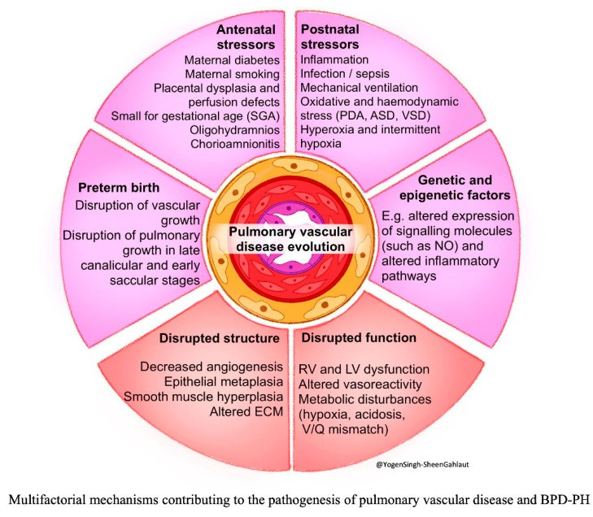
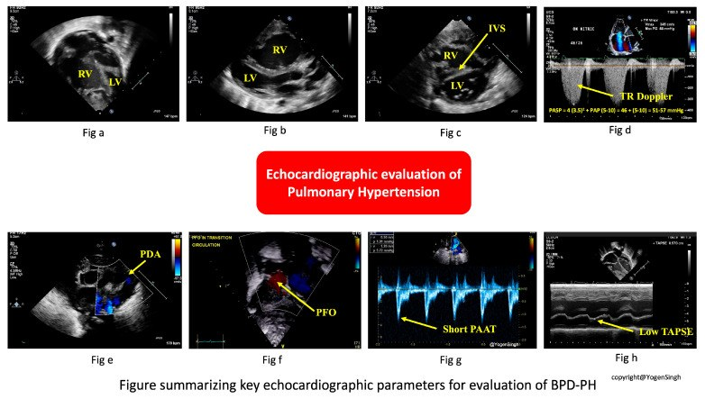
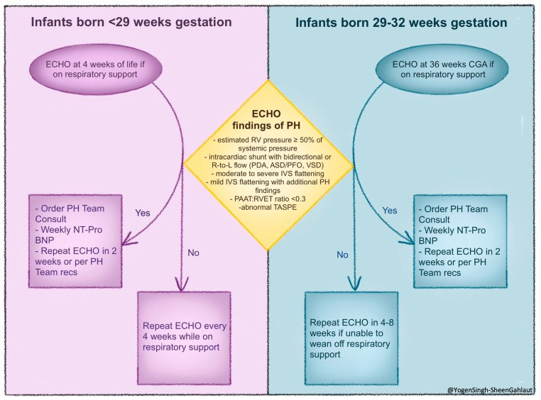
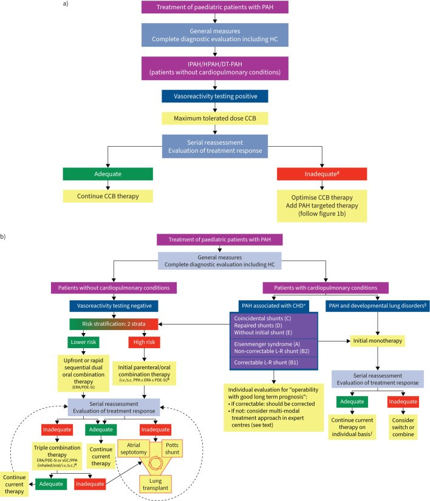
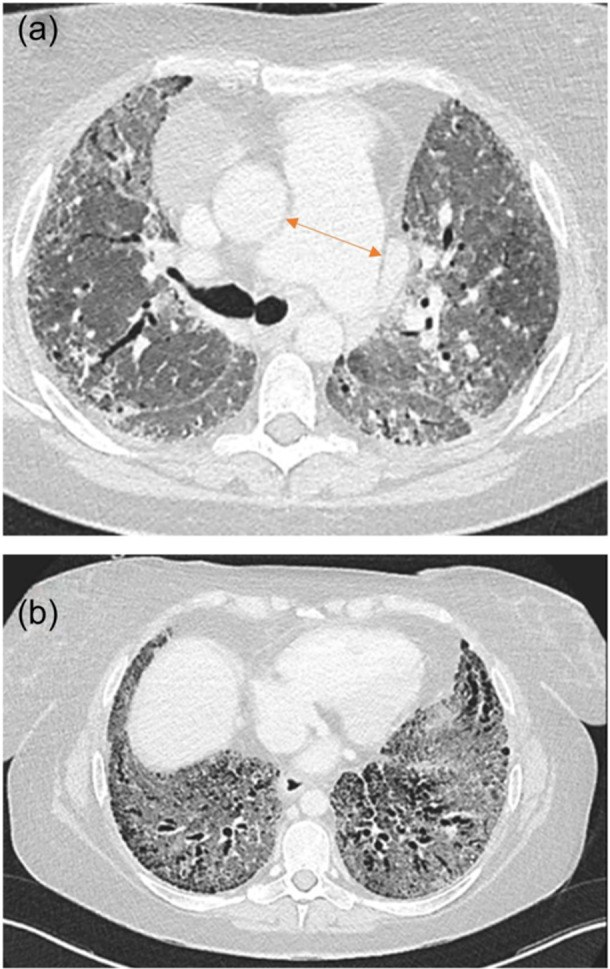

686 — Tăng áp lực động mạch phổi & hạ oxy mạn trong bệnh phổi mạn nhi (BPD, PIBO, giãn phế quản) / Pulmonary hypertension and chronic hypoxaemia in paediatric chronic lung disease
Tags: pattern:ph-gian-mach pattern:tim-phai pattern:u-khi vung:phoi-nhi score:WSPH-2024 protocol:sieu-am-tim protocol:oxy-luu-dong
Mức chắc chắn (certainty): tổng hợp y văn (literature synthesis) — tổng hợp từ y văn mở 2024–2026 (Europe PMC: Singh Y et al. Children 2026, PMC12940002; Ivy D et al. Eur Respir J 2024, PMC11525338; Vitulo P et al. Pulm Circ 2024, PMC11629413) + số liệu BPD trong repo (bài 606); số chưa kiểm chứng ghi "chưa rõ".
1. Tổng quan bệnh học – cơ chế hình ảnh
- Định nghĩa (nhóm 3 WSPH — PH do bệnh phổi và/hoặc thiếu oxy): tăng áp lực động mạch phổi khi mPAP > 20 mmHg lúc nghỉ, kèm PVR ≥ 3 Wood units (WU) cho thể trước mao mạch, và PCWP > 15 mmHg cho thể sau mao mạch (WSPH/EPPVAD, theo Singh Y et al. 2026). Lưu ý ngưỡng: ESC/ERS 2022 ở người lớn dùng PVR > 2 WU; với trẻ, bài này giữ ≥ 3 WU theo nguồn nhi khoa đã đọc — không trộn hai ngưỡng khi so sánh nghiên cứu.
- Chuỗi bệnh sinh (TẠI SAO trẻ bệnh phổi mạn lại tăng áp phổi):
- Thiếu oxy phế nang (alveolar hypoxia) → co mạch phổi do thiếu oxy (hypoxic pulmonary vasoconstriction, HPV) — cơ chế sinh lý bảo vệ tưới máu, nhưng kéo dài thì thành tăng áp lực.
- Mất giường mạch (vascular rarefaction): ở BPD, phế nang ít và to hơn, mao mạch giảm → diện cắt mạch giảm, mỗi đơn vị máu phải qua ít mạch hơn → PVR tăng.
- Tái cấu trúc mạch (remodeling): phì đại lớp cơ trung mạc, muscularization mạch xa, vỡ sợi chun → mạch cứng, kém giãn; cuối cùng là suy thất phải.
- Tăng gánh thể tích (PDA, PFO/ASD, VSD) → tăng dòng phổi (flow-dependent PH), dần dẫn tới tái cấu trúc và tăng PVR.
- Vì sao BPD là mô hình chuẩn của nhóm 3 ở trẻ: BPD là phổi bị ngừng phát triển phế nang và mạch (arrested alveolarization + angiogenesis) sau sinh non, với các yếu tố viêm, oxy hóa, thông khí áp lực, shunt. Số liệu định lượng:
- Tỷ lệ BPD-PH tăng theo độ nặng: ~5% BPD nhẹ, ~18% BPD trung bình, > 40% BPD nặng.
- Gần một nửa trẻ sinh cực non có BPD-PH tử vong trong 2 năm kể từ lúc chẩn đoán.
- Hồi phục: khoảng 47% hết PH sau 1 năm; 79–94% hết sau 2–2,25 năm — nghĩa là PH có thể thoái triển, nhưng cửa sổ nguy cơ nằm đúng giai đoạn phát triển thần kinh.
- PIBO và giãn phế quản nhi: cùng nhóm 3 nhưng cơ chế chính là tắc nghẽn đường thở nhỏ → ứ khí → giảm thông khí khu trú → co mạch do thiếu oxy + mất giường mạch do xơ hóa. Trong PIBO, ứ khí và mosaic trên HRCT thì thở ra chính là nơi giảm thông khí tương ứng — cùng bản đồ với vùng giảm tưới máu. Tỷ lệ PH ở PIBO nhi: chưa rõ — cần tra (không có con số đã kiểm chứng trong nguồn đã đọc).
- Cơ chế hình ảnh (vật lý):
- Siêu âm tim: chênh áp qua van ba lá tính bằng Bernoulli rút gọn: ΔP = 4 × v²; do đó RVSP = 4 × (vận tốc hở ba lá)² + áp lực nhĩ phải (ở sơ sinh lấy 3–5 mmHg). Vì RVSP ≥ 50% áp lực hệ thống đã gợi ý PH, đây là ngưỡng sàng lọc, không phải chẩn đoán.
- Hình dạng vách liên thất: khi áp lực thất phải ≥ thất trái, vách dẹt thì tâm trương (quá tải thể tích) hoặc cả thì tâm thu (quá tải áp lực) → chỉ số lệch tâm (eccentricity index, EI) ≥ 1,3.
- PAAT:RVET < 0,30 phản ánh PVR tăng (thời gian tăng tốc dòng động mạch phổi ngắn lại), hiệu chỉnh được theo nhịp tim.
- CT: động mạch phổi chính giãn — nguyên lý là áp lực thành mạch tỉ lệ với bán kính (Laplace) và giãn theo thời gian; trên CT, so đường kính ĐMP/ĐMC lên và đo ĐMP chính trên lát trục. Không có ngưỡng mm tuyệt đối dùng chung cho trẻ — phải so theo tuổi/diện tích cơ thể, các ngưỡng người lớn không chuyển trực tiếp được.
2. Mẫu hình + chẩn đoán phân biệt theo kiểu huyết động (gamut)
Bước 1 — xác định có PH thật không (đừng nhầm với thất phải giãn do shunt hoặc do thở máy). Bước 2 — xếp kiểu vì điều trị khác nhau hoàn toàn (Singh Y et al. 2026):
- Type 1 — trước mao mạch do tăng PVR (thể chiếm ưu thế ở BPD): phổi kém giãn nở, không đồng nhất, thiếu oxy mạn, mạch thưa + muscularized. Siêu âm: RV phì đại/giãn, hở ba lá, vách dẹt thì tâm thu, EI ≥ 1,3, PAAT ngắn, TAPSE thấp, shunt có thể hai chiều hoặc phải–trái. Điều trị: tối ưu thông khí + oxy + tăng trưởng, rồi giãn mạch phổi.
- Type 2 — phụ thuộc dòng (flow-dependent): PDA/PFO/ASD/VSD hoặc tuần hoàn bàng hệ chủ–phổi → tăng dòng phổi (Qp:Qs tăng). Siêu âm: buồng nhĩ–thất giãn, vách dẹt thì tâm trương; PDA gây giãn nhĩ trái/thất trái, vận tốc tĩnh mạch phổi > 50 cm/s. Điều trị: lợi tiểu + đóng shunt; giãn mạch phổi có thể làm nặng (tăng dòng, phù phổi).
- Type 3 — sau mao mạch do tăng PCWP:
- 3a — suy chức năng thất trái/hẹp–hở hai lá: hoặc sau thoát vị hoành bẩm sinh (CDH); điều trị tăng co bóp/giảm hậu gánh, tránh giãn mạch phổi (gây phù phổi).
- 3b — hẹp tĩnh mạch phổi (pulmonary vein stenosis, PVS): gặp tới 30% ca BPD-PH, tiến triển muộn, vận tốc tĩnh mạch phổi > 160 cm/s, mất dạng sóng hai/ba pha; không thấy trên CT thường nếu không tìm. Điều trị: can thiệp bóng/stent/phẫu thuật — giãn mạch phổi trước khi giải ép tĩnh mạch làm nặng phù phổi.
- Gamut "thất phải giãn/to ở trẻ có bệnh phổi mạn": BPD-PH (type 1–3), PIBO/giãn phế quản, CDH sau mổ, thoát vị hoành – thiểu sản phổi, PVS, bệnh tim trái bẩm sinh, shunt bẩm sinh, tăng áp phổi thoáng qua sau ngừng oxy, và nhiễm trùng hô hấp cấp làm PH nặng lên.
3. Bảng so sánh phân biệt (ma trận đối chiếu)
| Kiểu / thực thể | Hình ảnh – siêu âm điển hình | Chốt vào (rule-in) | Chốt loại (rule-out) | Gợi ý xác nhận |
|---|---|---|---|---|
| Type 1 — BPD-PH trước mao mạch | RV phì đại/giãn; vách dẹt thì tâm thu, EI ≥ 1,3; PAAT:RVET < 0,30; TAPSE thấp; phổi kém giãn nở, không đồng nhất | Bệnh phổi mạn + RVSP ≥ 50% áp lực hệ thống + vách dẹt tâm thu | Vách dẹt chỉ thì tâm trương + buồng trái giãn → nghĩ type 2 | Siêu âm lặp lại; NT-proBNP; thông tim khi nặng/không đáp ứng |
| Type 2 — phụ thuộc dòng | PDA/PFO/ASD/VSD; nhĩ–thất giãn; vách dẹt tâm trương; vận tốc tĩnh mạch phổi > 50 cm/s; tăng B-line | Shunt trái–phải rõ + Qp:Qs tăng + giãn buồng trái | Không có shunt, buồng trái bình thường → không phải type 2 | Siêu âm Doppler; đóng shunt rồi đánh giá lại |
| Type 3a — sau mao mạch do tim trái | Giãn nhĩ trái, sóng S tĩnh mạch phổi giảm, D tăng, Ar lớn; chức năng thất trái giảm | PCWP > 15 mmHg trên thông tim; hở/hẹp hai lá | PCWP bình thường + không bệnh tim trái | Thông tim; siêu âm tim chuyên sâu |
| Type 3b — hẹp tĩnh mạch phổi | Vận tốc tĩnh mạch phổi > 160 cm/s, mất dạng sóng, hẹp khu trú; tiến triển muộn | Doppler tĩnh mạch phổi bất thường ở ≥ 1 tĩnh mạch + tiền sử non tháng/BPD | Doppler 4 tĩnh mạch bình thường, dạng sóng đủ → ít nghĩ PVS | Siêu âm tim chuyên sâu 4 tĩnh mạch mỗi lần theo dõi; CT/MRI mạch; thông tim |
| PIBO / giãn phế quản nhi có PH | HRCT: mosaic + ứ khí thì THỞ RA, giãn phế quản; RVSP tăng, vách dẹt | Bệnh đường thở nhỏ mạn + RVSP ≥ 50% + thiếu oxy khi gắng sức/ngủ | Mosaic giữ nguyên cả 2 thì + RVSP bình thường → mosaic do mạch, không phải PH | HRCT thì thở ra; đa ký giấc ngủ; siêu âm tim |
| Tăng áp phổi "giả" do thông khí | RVSP cao khi đang toan hô hấp/thiếu oxy cấp, giảm sau tối ưu thông khí | RVSP giảm ≥ 20% sau tối ưu oxy/thông khí | RVSP vẫn cao sau tối ưu → PH thật | Đánh giá lại sau 24–72 giờ tối ưu hỗ trợ hô hấp |

Sáu nhóm yếu tố cùng đẩy bệnh mạch phổi: sang thương trước sinh, sinh non, sang thương sau sinh, bất thường cấu trúc, bất thường chức năng, và yếu tố gen–biểu sinh. Đây là lý do không có một "phép đo" duy nhất chẩn đoán BPD-PH. Nguồn: Singh Y et al., Children 2026 (PMC12940002), CC BY 4.0.Siêu âm tim — bảy thông số phải đo và ghi vào phiếu theo dõi
| Thông số | Cách đo | Ngưỡng gợi ý PH (trẻ) | Ý nghĩa |
|---|---|---|---|
| Vận tốc hở ba lá (TR jet) | Doppler liên tục, mặt cắt 4 buồng/RV inflow | RVSP ≥ 50% áp lực hệ thống | Ước lượng áp lực thất phải; mất sóng ở 30–40% sơ sinh non tháng |
| Hình dạng vách liên thất / EI | Mặt cắt cạnh ức trục ngắn, ngang cơ nhú | EI tâm thu ≥ 1,3 | Quá tải áp lực; EI tâm trương ↑ = quá tải thể tích |
| PAAT | Doppler xung đường ra thất phải | PAAT ngắn | Phản ánh PVR tăng |
| PAAT:RVET | Tỉ số | < 0,30 | Hiệu chỉnh theo nhịp tim |
| TAPSE | M-mode vòng van ba lá | z-score < −2 | Chức năng thất phải giảm |
| Dòng shunt (PDA/PFO/ASD/VSD) | Doppler màu + phổ | Hai chiều hoặc phải–trái | Gợi ý áp lực phổi ≥ hệ thống |
| Doppler tĩnh mạch phổi (4 tĩnh mạch) | Doppler xung, mặt cắt trên ức | > 50 cm/s (quá tải dòng); > 160 cm/s (hẹp) | Phân biệt type 2 với type 3b |

*Từ trái sang phải, trên xuống: (a,b) thất phải giãn so với thất trái; (c) vách liên thất dẹt (IVS); (d) phổ Doppler hở ba lá để tính RVSP; (e) PDA; (f) PFO với shunt; (g) PAAT ngắn; (h) TAPSE thấp. Nguồn: Singh Y et al., Children 2026 (PMC12940002), CC BY 4.0.*4. Protocol chụp/sàng lọc + hệ phân độ và ngưỡng điều trị
4.1. Sàng lọc bằng siêu âm tim (lịch theo tuổi thai và tuổi sau sinh):
- Trẻ sinh < 29 tuần: siêu âm tim lúc 4 tuần tuổi nếu còn hỗ trợ hô hấp.
- Trẻ sinh 29–32 tuần: siêu âm tim lúc 36 tuần tuổi hiệu chỉnh (CGA) nếu còn hỗ trợ hô hấp.
- Không có PH: lặp lại mỗi 4–8 tuần khi còn phụ thuộc hỗ trợ hô hấp.
- Có PH: hội chẩn nhóm PH, NT-proBNP mỗi tuần, lặp siêu âm ~2 tuần/lần (hoặc theo nhóm PH).
- Trước xuất viện: siêu âm tim nếu còn hỗ trợ hô hấp; đánh giá lại khi chậm tăng trưởng, tăng nhu cầu oxy, nhập viện tái diễn.
- Chỉ định thông tim (chuẩn vàng): khi cần xác định kiểu huyết động, thử giãn mạch, tăng bậc điều trị, hoặc không rõ chẩn đoán. Đo mPAP, PVR, PCWP, Qp:Qs; ngưỡng: mPAP > 20 mmHg, PVR ≥ 3 WU (trước mao mạch), PCWP > 15 mmHg (sau mao mạch).
4.2. Oxy và hỗ trợ hô hấp (can thiệp nền, không phải "phụ")
- Đích SpO₂ 93–97% ở trẻ BPD-PH (theo AHA/ATS–PPHNet, Singh Y et al. 2026); theo dõi histogram SpO₂, cố giữ > 80% số ghi trong khoảng đích.
- Đối chiếu với bài 606: với BPD nói chung, nhiều đơn vị dùng SpO₂ 90–95% để cân bằng nguy cơ bệnh võng mạc do sinh non (ROP); khi đã có PH, đích cao hơn (93–97%) vì co mạch do thiếu oxy là cơ chế chính. Hai đích khác nhau có chủ đích — ghi rõ lý do trong hồ sơ.
- Oxy lưu động tại nhà: chỉ định khi thiếu oxy mạn/thiếu oxy khi ngủ hoặc khi gắng sức; trước khi cho về cần đa ký giấc ngủ (polysomnography) nếu nghi giảm oxy khi ngủ, và đo lại SpO₂ khi bú/ngủ.
- Tối ưu thông khí: tránh xẹp phổi và căng giãn quá mức; đánh giá mềm sụn phế quản (tracheobronchomalacia), phì đại amidan/VA, hẹp dưới thanh môn, liệt dây thanh; nội soi mềm khi nghi tắc nghẽn động.
- Xử lý phần "ung thư" của bệnh phổi mạn: điều trị trào ngược/vi hít sặc, nhiễm trùng hô hấp, dinh dưỡng – tăng trưởng (tăng trưởng phổi là điều trị sinh học thật sự).
4.3. Thuốc giãn mạch phổi — chỉ định theo kiểu, không theo "SUV" hay "độ nặng cảm tính"
| Thuốc | Đường tác động | Vai trò | Cảnh báo chính |
|---|---|---|---|
| Oxy | Giảm co mạch do thiếu oxy | Nền tảng, đầu tay | Tránh tăng oxy quá mức (stress oxy hóa) |
| iNO | NO–cGMP | Cơn PH cấp, cai ECMO/ thử đáp ứng | Đáp ứng thay đổi, chỉ dùng ngắn hạn |
| Sildenafil | PDE5 → tăng cGMP | Điều trị mạn thường dùng, hỗ trợ cai iNO | Tụt huyết áp hệ thống |
| Milrinone | PDE3 → tăng cAMP | Suy chức năng thất/suy tim | Tụt huyết áp, nặng phù phổi |
| Bosentan | Đối kháng thụ thể endothelin | Điều trị mạn chọn lọc | Độc gan — theo dõi men gan |
| Iloprost/treprostinil/epoprostenol | Prostacyclin → cAMP | PH nặng/kháng trị | Ít dữ liệu ở sơ sinh, đường dùng phức tạp |
- Nguyên tắc sống còn: nhóm 3 không phải nhóm 1. Giãn mạch phổi không sửa được nguyên nhân và có thể làm nặng V/Q mismatch (tăng tưới máu vùng phổi không thông khí) → chỉ dùng sau khi đã tối ưu thông khí/oxy, và tránh ở type 2/type 3.
- Theo dõi khi dùng thuốc: huyết áp, SpO₂, NT-proBNP, siêu âm tim sau mỗi lần tăng liều; men gan nếu dùng bosentan; đánh giá lại sau 3–6 tháng để quyết định duy trì/giảm.
flowchart TD
A[Trẻ bệnh phổi mạn: BPD, PIBO, giãn phế quản] --> B[Siêu âm tim theo lịch 4 tuần hoặc 36 tuần CGA]
B --> C{RVSP trên 50 phần trăm huyết áp hoặc vách dẹt?}
C -->|Không| D[Lặp siêu âm 4 đến 8 tuần + NT-proBNP khi có triệu chứng]
C -->|Có| E[Đánh giá kiểu: type 1, type 2, type 3a, type 3b]
E --> F[Tối ưu thông khí + oxy đích 93 đến 97 phần trăm + dinh dưỡng]
F --> G{Còn PH sau tối ưu?}
G -->|Không| H[Theo dõi tiếp, không dùng giãn mạch]
G -->|Có| I[Thông tim nếu cần xác định kiểu hoặc thử giãn mạch]
I --> J[Type 1: cân nhắc sildenafil hoặc bosentan]
I --> K[Type 2 hoặc 3: xử lý shunt, lợi tiểu, can thiệp tĩnh mạch phổi]

Nhánh trái: < 29 tuần — siêu âm lúc 4 tuần tuổi; nhánh phải: 29–32 tuần — siêu âm lúc 36 tuần CGA. Tiêu chí dương trong ô vàng: RVSP ≥ 50% áp lực hệ thống, shunt phải–trái, vách dẹt vừa/nặng, PAAT:RVET < 0,3, TAPSE bất thường. Nguồn: Singh Y et al., Children 2026 (PMC12940002), CC BY 4.0.
Nhánh b (phải): bệnh nhân PAH kèm bệnh phổi – phát triển đi thẳng vào đơn trị liệu ban đầu rồi đánh giá lại — khác hẳn nhóm PAH vô căn (thử giãn mạch → chẹn kênh canxi → phối hợp). Nguồn: Ivy D et al., Eur Respir J 2024 (PMC11525338), CC BY-NC 4.0.5. Biến thể bình thường và cạm bẫy
- Không đo được vận tốc hở ba lá ở 30–40% sơ sinh non tháng → không được kết luận "không PH"; phải dùng vách liên thất, PAAT:RVET, TAPSE, dòng shunt.
- Shunt lớn làm sai lệch chênh áp: khi PDA/VSD lớn, chênh áp qua van ba lá không phản ánh đúng áp lực phổi (hai buồng "thông nhau" về áp lực) — đọc hướng shunt thay vì chỉ đọc con số.
- RVSP là ước lượng, không phải mPAP: RVSP ≠ mPAP; chỉ thông tim mới đo mPAP/PVR/PCWP. Đừng ghi "mPAP 60" khi chỉ có siêu âm.
- Thiếu oxy cấp do thủ thuật/toan hô hấp làm RVSP tăng thoáng qua → đo lại sau tối ưu, tránh gán nhãn PH mạn.
- Hai đích SpO₂ khác nhau: 90–95% (BPD chung, giảm nguy cơ ROP) vs 93–97% (khi có PH) — không áp đích cao cho mọi trẻ non tháng, nhưng không để thấp ở trẻ đã có PH.
- Giãn mạch phổi ở nhóm 3: tăng tưới máu vùng phổi không thông khí → SpO₂ giảm, CO₂ tăng, phù phổi; nếu SpO₂ tụt sau khi bắt đầu sildenafil, nghĩ V/Q mismatch hoặc PVS chưa giải ép, không phải "thuốc chưa đủ liều".
- Bỏ sót PVS: tĩnh mạch phổi không được khảo sát Doppler đủ 4 nhánh ở mọi lần siêu âm là lỗi hệ thống; PVS tiến triển muộn và là nguyên nhân tử vong.
- Cạm bẫy mặt cắt trên HRCT: mosaic do mạch giữ nguyên cả thì hít vào và thở ra; mosaic do tiểu phế quản rõ hơn ở thì thở ra (ứ khí). Chỉ chụp thì hít vào sẽ bỏ sót PIBO.
- Phản biện nguồn: phần lớn khuyến cáo BPD-PH đến từ đồng thuận chuyên gia + nghiên cứu quan sát, không có thử nghiệm ngẫu nhiên lớn; ngưỡng PVR 3 WU khác ESC/ERS 2022 (2 WU) — khi trích dẫn phải nói rõ khung nào.
6. Tự lượng giá — Blind Quiz
Ca 1 — Trẻ sinh 26 tuần, 4 tuần tuổi, còn CPAP. Siêu âm tim dưới đây: bạn đo gì, và có gọi là PH không?
- Gợi ý lâm sàng: BPD đang hình thành, đang thở CPAP, không shunt lớn; NT-proBNP tăng nhẹ.
- Câu hỏi: Ba dấu hiệu nào trên hình gợi ý quá tải áp lực thất phải? Tính RVSP thế nào nếu vận tốc hở ba lá là 2,8 m/s? Bước tiếp theo?
Bấm để hiện đáp án (findings + chẩn đoán)
- Dấu hiệu: (c) vách liên thất dẹt thì tâm thu, (g) PAAT ngắn (PAAT:RVET < 0,30), (h) TAPSE thấp; kèm (a,b) thất phải giãn so với thất trái.
- Tính RVSP: 4 × 2,8² = 31,4 mmHg, cộng áp lực nhĩ phải 3–5 mmHg → ~34–36 mmHg. Nếu áp lực hệ thống tâm thu ~60 mmHg thì RVSP > 50% → gợi ý PH.
- Bước tiếp: tối ưu thông khí + giữ SpO₂ 93–97%, NT-proBNP mỗi tuần, lặp siêu âm ~2 tuần; thông tim nếu nặng, không đáp ứng, hoặc cần phân biệt type 2/3.
- Nguồn ảnh: Singh Y et al., Children 2026, PMC12940002, CC BY 4.0.
Ca 2 — Trẻ 30 tuần, 36 tuần CGA, còn thở oxy. Dùng lưu đồ dưới đây: làm gì nếu siêu âm âm tính? Và nếu dương tính?
- Câu hỏi: Thời điểm sàng lọc? Tiêu chí nào trong ô vàng là "dương"? Khoảng lặp lại siêu âm khi âm và khi dương?
Bấm để hiện đáp án (findings + chẩn đoán)
- Thời điểm: 36 tuần CGA (nhóm 29–32 tuần) nếu còn hỗ trợ hô hấp; nhóm < 29 tuần làm ở 4 tuần tuổi.
- Dương khi: RVSP ≥ 50% áp lực hệ thống, shunt phải–trái, vách dẹt vừa/nặng, PAAT:RVET < 0,3, TAPSE bất thường.
- Âm: lặp mỗi 4–8 tuần khi còn phụ thuộc hỗ trợ hô hấp. Dương: hội chẩn nhóm PH + NT-proBNP mỗi tuần + siêu âm ~2 tuần/lần (hoặc theo nhóm PH).
- Nguồn: Singh Y et al., Children 2026, PMC12940002, CC BY 4.0.
Ca 3 — Bệnh nhân người lớn có xơ phổi nặng, khó thở tăng; CT dưới đây. Dấu hiệu nào gợi ý tăng áp phổi, và vì sao nguyên lý này áp dụng được cho trẻ?

- Câu hỏi: Mũi tên chỉ gì? Vì sao giãn ĐMP là dấu hiệu gián tiếp? Ở trẻ, cần so với gì thay vì dùng ngưỡng mm người lớn?
Bấm để hiện đáp án (findings + chẩn đoán)
- Mũi tên: động mạch phổi chính giãn trên nền phổi xơ nặng (hình (a)); hình (b) là nhu mô phổi xơ – kính mờ đối chiếu.
- Vì sao gián tiếp: giãn là hệ quả của áp lực thành mạch tăng kéo dài (Laplace) và tăng thể tích, không đo trực tiếp áp lực; không có ngưỡng mm tuyệt đối dùng chung.
- Ở trẻ: so ĐMP/ĐMC, z-score theo tuổi/diện tích cơ thể; chẩn đoán vẫn dựa siêu âm tim + thông tim, CT chỉ là dấu hiệu hỗ trợ.
- Lưu ý trung thực nguồn: ca trong ảnh là người lớn xơ phổi, dùng để minh họa nguyên lý giãn ĐMP, không phải ca nhi. Nguồn: Vitulo P et al., Pulm Circ 2024, PMC11629413, CC BY-NC 4.0.
Bài liên quan chéo
- 600 – Tổng quan Nhi khoa
- 606 – BPD: bệnh phổi mạn ở trẻ sinh non
- 610 – Suy hô hấp sơ sinh & dị dạng phổi
- 669 – Theo dõi dài hạn PIBO & Swyer–James
- 619 – Di chứng hô hấp sau hoại tử phổi & cắt thùy
- 604 – Dẫn lưu màng ngoài tim như nhi
- 605 – Siêu âm phổi điểm sơ sinh
Ảnh
images/686_co-che-BPD-PH_CT_PMC12940002.jpg— CC BY 4.0.images/686_sieu-am-tim-PH_ECHO_PMC12940002.jpg— CC BY 4.0.images/686_luu-do-tam-soat-BPD-PH_ECHO_PMC12940002.jpg— CC BY 4.0.images/686_chien-luoc-dieu-tri-PAH-nhi_CT_PMC11525338.jpg— CC BY-NC 4.0.images/686_dong-mach-phoi-gian_CT_PMC11629413.jpg— CC BY-NC 4.0 (ca người lớn, minh họa nguyên lý).- Nguồn + giấy phép từng ảnh:
images/CREDITS.md; link gốc:sources.md.
Không dùng để chẩn đoán độc lập khi chưa có người hướng dẫn.